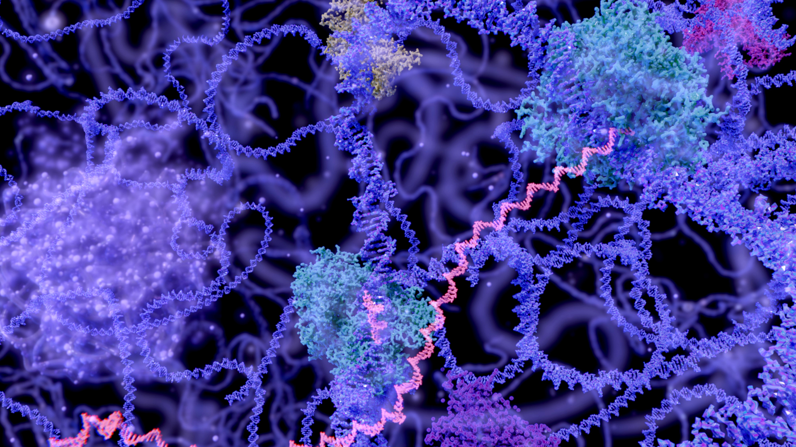
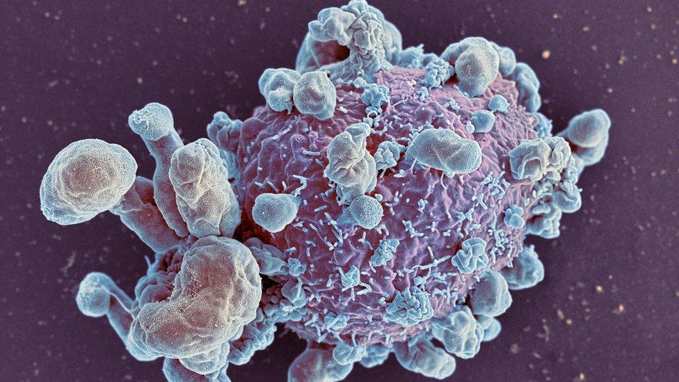
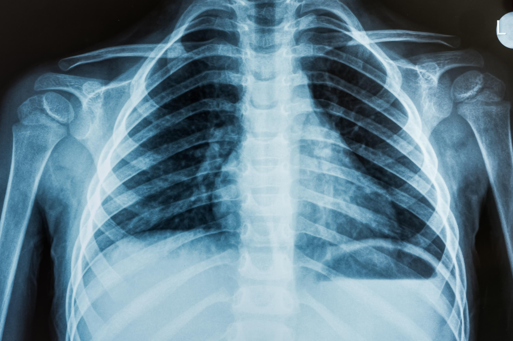

Building intelligent
systems for healthcare.
I'm Emilja Beneja — an AI researcher and developer applying machine learning, generative AI, and intelligent agent systems to clinical workflows and health informatics. Computer Engineering graduate, currently deepening that work at George Brown College.
Where health informatics meets applied AI
I'm an AI Researcher and Developer currently pursuing Health Informatics at George Brown College, building on a foundation in Computer Engineering and Artificial Intelligence. My work centers on applying machine learning, generative AI, and intelligent agent systems to healthcare, clinical workflows, and data-driven decision support.
I enjoy building practical AI solutions that bridge technical innovation with real-world business and healthcare needs — from diagnostic imaging models to clinical decision support systems.
Academic background
Health Informatics
George Brown College — Toronto, ONApplied AI Solutions Development
George Brown College — Toronto, ONBachelor of Computer Engineering, Graduated with Honors
Epoka University — Tirana, AlbaniaThesis: Detection of Brain Diseases from MRI and CT Scans Using Machine Learning Algorithms
Where I've worked
AI Researcher & Developer
Eunoia Praxis — Toronto, ONArchitecting and developing AI-powered solutions that improve efficiency across healthcare and clinical workflows. Designing intelligent agent systems, automating documentation processes, and researching applications of generative AI in healthcare environments.
AI / ML Engineering Intern (WIL)
Kinectrics — Toronto, ONContributed to ROS-based field robot development for autonomous mapping, inspection, and data collection. Assisted with AI and computer vision integration for robotic systems.
Beauty Advisor
Shoppers Drug Mart — Toronto, ONDelivering personalized customer service and product recommendations while supporting merchandising, inventory, and day-to-day retail operations.
IT Support Specialist
Balfin GroupProvided enterprise IT support and troubleshooting for end users, and supported database management activities across the organization.
Research & scholarly work
Peer-reviewed research alongside academic papers spanning clinical decision support, digital health ethics, and systems design.
Revisiting Classical and Deep Learning Models for Multi-Class Brain MRI Classification under Severe Data Constraints
With Bekir Karlik. Evaluates classical machine learning (LBP+KNN, GLCM+KNN, SVM, MLP) against a lightweight CNN and a ResNet-50 transfer-learning model for five-class brain MRI classification — Alzheimer's, ischemic stroke, meningitis, brain tumor, and normal — under a small, heterogeneous dataset. Finds that SVM's accuracy is partly a product of dataset bias, CNNs generalize poorly despite exploiting spatial features, and ResNet-50 saturates early, underscoring the gap between model scale and available data in constrained biomedical imaging settings.
OVIS: PCOS Clinical Decision Support System (CDSS)
Group research project designing a clinical decision support system for Polycystic Ovary Syndrome, covering health informatics workflows, stakeholder analysis, and requirements engineering.
Read the paperGambling Addiction in Digital Health
Analytical paper examining gambling addiction as a mental health issue, with emphasis on digital health interventions, data-driven risk assessment, and ethical considerations.
Read the paperSoftware Engineering Requirements Documentation
Coverage of software engineering principles — design, analysis, implementation, and system requirements documentation.
Read the paperDatabase Management Systems Project
Academic project covering database design, normalization, and system requirements within a structured DBMS environment.
Read the paperApplied machine learning
Hands-on models spanning genomics, medical imaging, and behavioral health data.

Enzymes Classification
Classification of enzymes using classical ML and deep learning techniques. FCNN achieved the best performance across all tested architectures.
View on GitHub
Tumor Classification with RNA-Seq
Tumor classification from RNA-sequencing data using dimensionality reduction techniques to isolate meaningful gene expression signals.
View on GitHub
Chest X-Ray Classification
Four-class chest X-ray classification using a hybrid CNN and Vision Transformer model for improved diagnostic accuracy.
View on GitHubMental Health Depression Prediction
Deep learning model predicting depression risk from behavioral and demographic data, aimed at earlier screening support.
View on GitHubFull CV
Download a copy or preview it below.
Community involvement
Digital Health Canada — eHealth2025 Toronto
Supported the Digital Health Canada eHealth Conference in Toronto, assisting with event coordination, attendee engagement, and on-site support for digital health professionals and stakeholders.
ICT Bootcamp — Code for Albania
Mentored students in React Native development, UX design principles, and Python, and coordinated events for participants.
Red Cross Volunteer
Supported humanitarian activities and community donation drives.